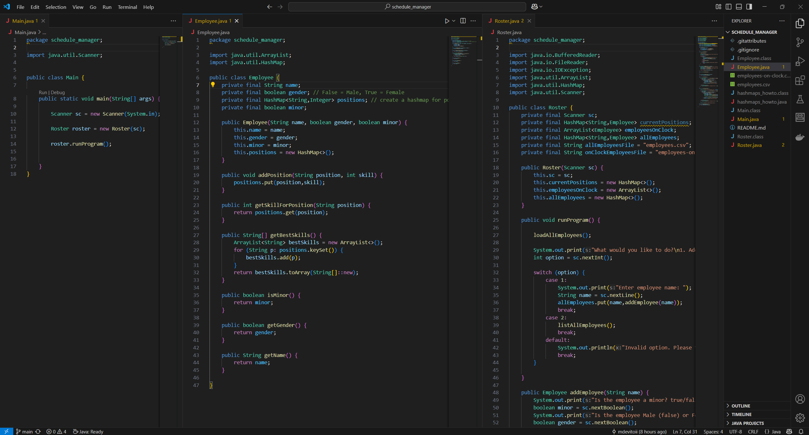
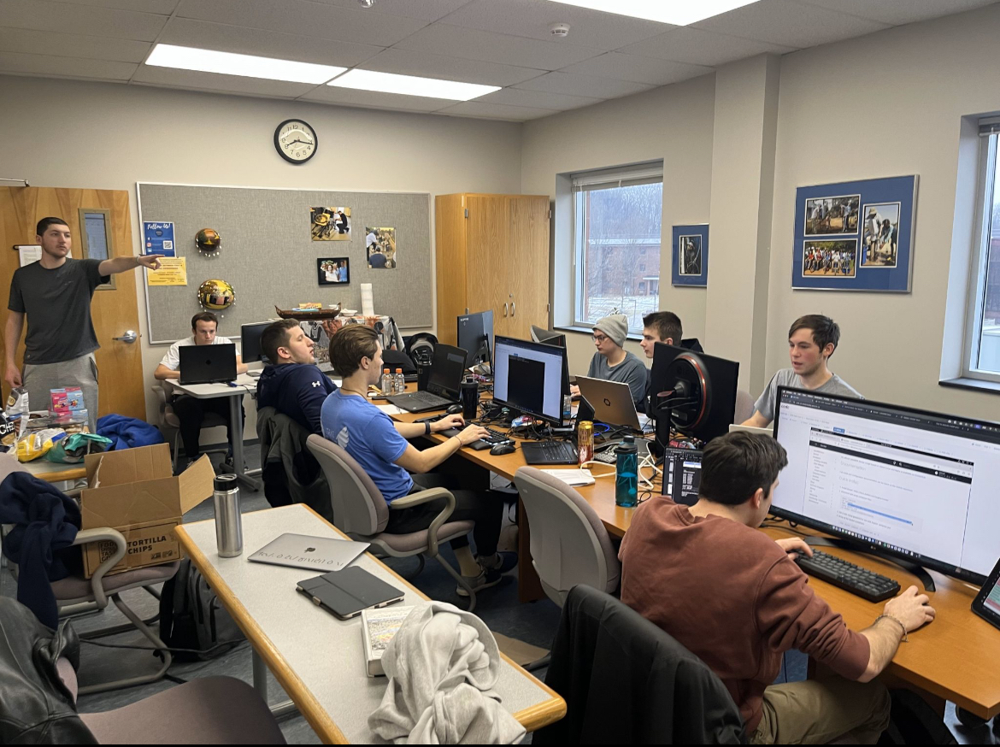
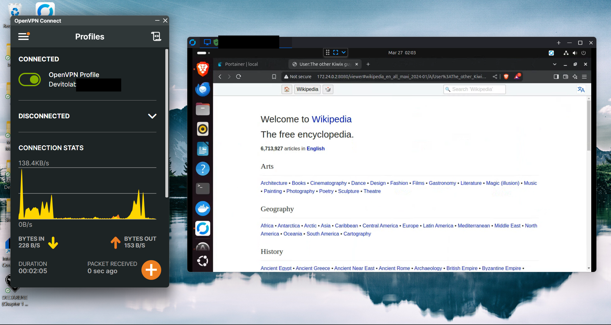

Recent Projects
Schedule Manager
Java Program with Real-World Applications
What better project to show off than a website designed entirely by myself? I programmed all of the HTML/CSS for this website as part of a project for CIS 291. I logged my development process using GitHub, and I also utilized Copilot for help with hexadecimal values (I'm still bad at those). Overall, I loved this project! I'm looking forward to improving this website and potentially hosting it myself!
View the Repository Here
MACCDC Regionals
First Cybersecurity Competition
What better project to show off than a website designed entirely by myself? I programmed all of the HTML/CSS for this website as part of a project for CIS 291. I logged my development process using GitHub, and I also utilized Copilot for help with hexadecimal values (I'm still bad at those). Overall, I loved this project! I'm looking forward to improving this website and potentially hosting it myself!
Read more on LinkedIn
Homelab Upgrades
Self-Hosted Wikipedia?!
What better project to show off than a website designed entirely by myself? I programmed all of the HTML/CSS for this website as part of a project for CIS 291. I logged my development process using GitHub, and I also utilized Copilot for help with hexadecimal values (I'm still bad at those). Overall, I loved this project! I'm looking forward to improving this website and potentially hosting it myself!
Visit Kiwix's Website